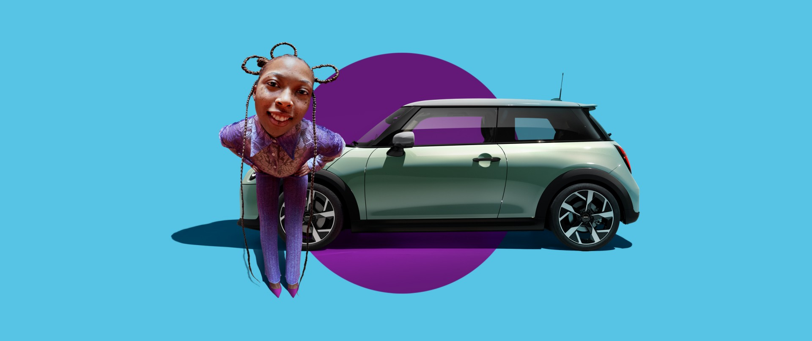

Yeni
Yeni
mını cooper 3 kapı.
Seni yeniden gormek ne güzel.
MINI Cooper 3 Kapı: Yakıt Tüketimi (WLTP ortalama): 6,4/100 km ; CO2 Emisyonu (WLTP ortalama): 144 gr/km. Burada gösterilen tüm resimler ve detaylar geçicidir ve yalnızca gösterim amacı taşır.
Yeni tamamen elektrikli
mını countryman
Maceranın dozunu arttır.
Yeni Tamamen Elektrikli MINI Countryman: Elektrik Tüketimi (WLTP ortalama): 18,5 - 16,0 kWsa/100km; CO2 Emisyonu (WLTP ortalama): 0 gr/km; Elektrikli Menzil (WLTP ortalama): 399 – 462 km. Burada gösterilen tüm
resimler ve detaylar geçicidir ve yalnızca gösterim amacı taşır.
resimler ve detaylar geçicidir ve yalnızca gösterim amacı taşır.
Yeni mını
countryman
Maceranın dozunu arttır.
MINI Countryman: Yakıt Tüketimi (WLTP ortalama): 6,5 – 6,1 l/100 km; CO2 Emisyonu (WLTP ortalama): 147 – 139 gr/km.
Burada gösterilen tüm resimler ve detaylar geçicidir ve yalnızca gösterim amacı taşır.
Burada gösterilen tüm resimler ve detaylar geçicidir ve yalnızca gösterim amacı taşır.

mını ile dilediğin yerde test
sürüşü
MINI Countryman: Yakıt Tüketimi (WLTP ortalama): 6,5 – 6,1 l/100 km; CO2 Emisyonu (WLTP ortalama): 147 – 139 gr/km.
Burada gösterilen tüm resimler ve detaylar geçicidir ve yalnızca gösterim amacı taşır.
Burada gösterilen tüm resimler ve detaylar geçicidir ve yalnızca gösterim amacı taşır.